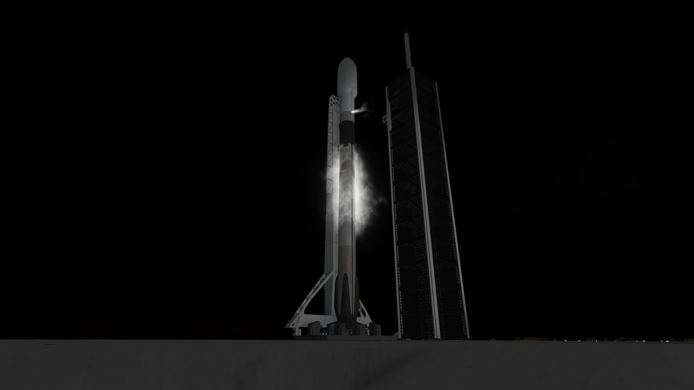
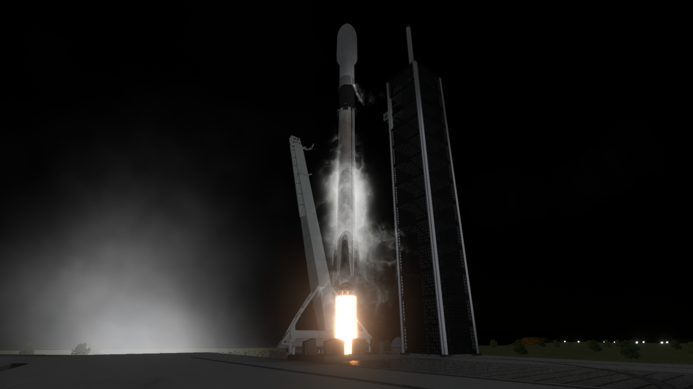
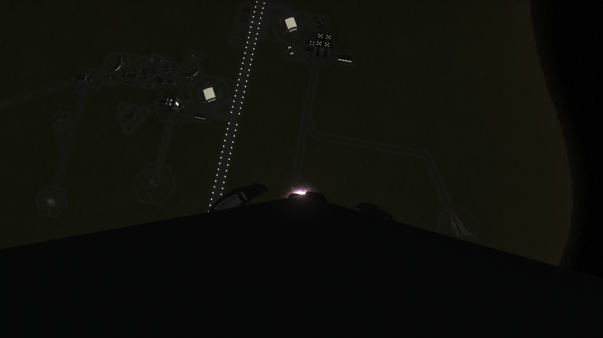
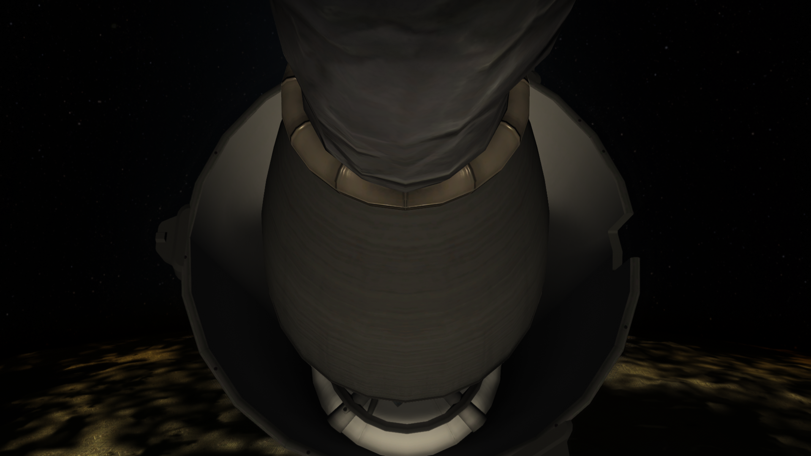
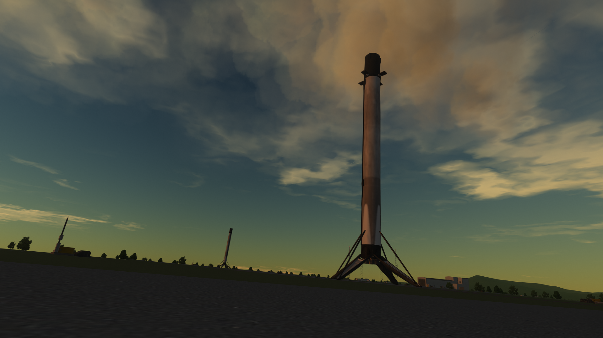
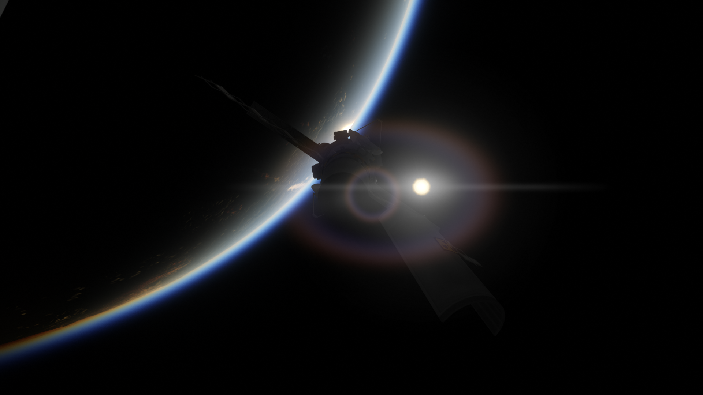
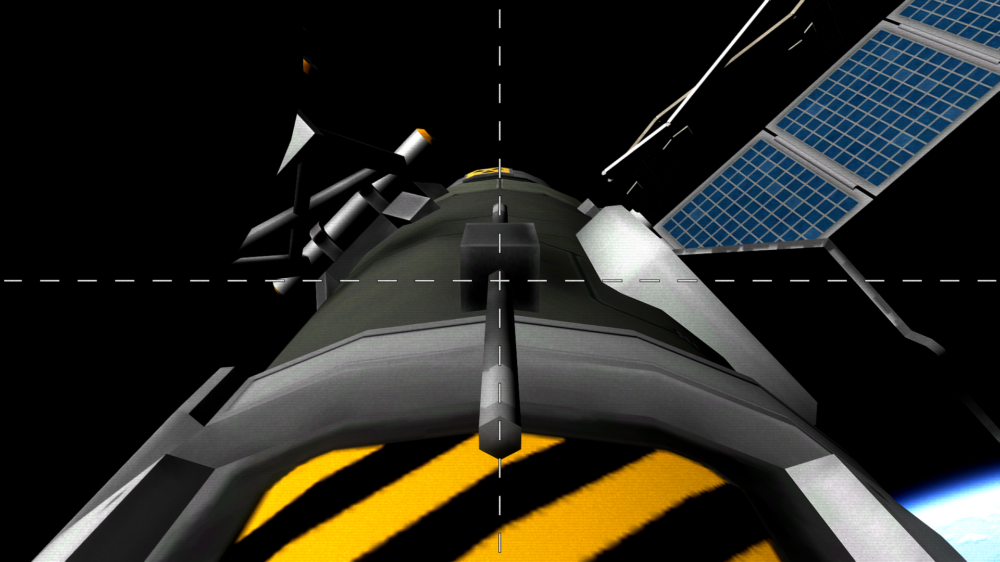

New Destiny
Vehículo: Falcon 9 Block 5
Fecha: 9 de mayo de 2025
Estado: Éxito

Introducción
New Destiny es la primera misión del booster B1062 para llevar la etapa de transferencia TS-01 "Jailbreak" a LKO, esperando por la misión EATH5, que consistirá en una cápsula Cargo Dragon de demostración que realizará un sobrevuelo lunar.
Detalles Técnicos
- Vehículo: Falcon 9 Block 5
- Altura del cohete: 70 m
- Propulsor: B1062.1
- Carga útil: TS-01
- Órbita: 230 x 230
- Recuperación: Éxito sobre LZ-2 (Landing Zone 2)
Imágenes de la misión





